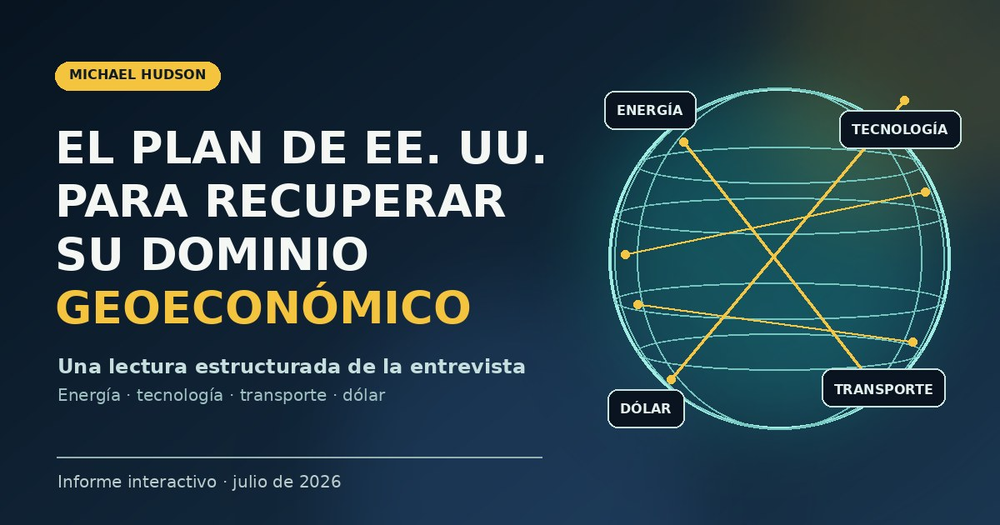

Fin de un ciclo
La globalización organizada alrededor del dólar, Wall Street y corredores estadounidenses estaría fragmentándose mediante guerras económicas y militares.
Una reconstrucción editorial de la visión expuesta por Michael Hudson, en conversación con Glenn Diesen, sobre la transición desde una hegemonía industrial y financiera hacia una estrategia de rentas, monopolios y puntos de estrangulamiento.

Hudson interpreta la política estadounidense como una respuesta a la pérdida relativa de primacía industrial y acreedora.
La globalización organizada alrededor del dólar, Wall Street y corredores estadounidenses estaría fragmentándose mediante guerras económicas y militares.
Ante la pérdida de poder industrial, Estados Unidos intentaría preservar su posición mediante monopolios, licencias, sanciones y control de infraestructuras.
El modelo solo funcionaría mientras rivales y aliados carezcan de energía, tecnología, rutas o sistemas de pago alternativos.
La continuidad está en el reciclaje de dólares: el gasto exterior de Estados Unidos genera saldos que regresan mediante compras de títulos del Tesoro, acciones, bonos y proyectos empresariales. La actualización de 2026 añade una transición desde ese mecanismo financiero hacia un sistema más coercitivo de puntos de estrangulamiento.
Diesen contrapone un antiguo «hegemon benigno», que favorecía la prosperidad de los estados de primera línea, con una fase en la que Estados Unidos exigiría costes mayores a aliados cuya industria y legitimidad política se debilitan.
Si Estados Unidos puede impedir que aliados y rivales actúen de acuerdo con sus propios intereses económicos y desarrollen alternativas energéticas, tecnológicas, logísticas y monetarias.
La entrevista menciona inicialmente tres sectores y después añade explícitamente el financiero como cuarto monopolio.
Control del suministro, precios, exportaciones y reinversión de excedentes petroleros.
Chips, plataformas, centros de datos, electricidad, agua y propiedad de la infraestructura digital.
Estrechos, puertos, rutas marítimas, oleoductos, Báltico, Ártico y accesos intercontinentales.
Moneda de reserva, títulos del Tesoro, SWIFT, compensación bancaria, sanciones y congelación de activos.
Los centros de datos necesitan electricidad y agua. Hudson plantea que el capital petrolero y la energía del Golfo permiten ampliar infraestructura tecnológica asociada a empresas estadounidenses.
El valor del control petrolero depende de poder exportarlo, impedir exportaciones rivales o forzar rutas y precios alternativos.
Una mercancía necesita llegar y cobrarse: bloquear rutas o pagos puede producir efectos equivalentes sobre el comercio.
Las inversiones en grandes tecnológicas y proyectos digitales contribuyen, según Hudson, a estabilizar la balanza de pagos y conservar rentas de monopolio.
Cada frente aparece como parte de una disputa por recursos, corredores, pagos y autonomía estratégica.
Hudson interpreta la guerra como una disputa existencial por soberanía, peajes, flujos petroleros, activos congelados y ruptura de la presencia militar y financiera estadounidense.
Protección militar, excedentes petroleros, inversiones tecnológicas y estabilidad de regímenes aparecen ligados en una misma arquitectura.
Los ataques a refinerías, puertos y navegación se leen como intento de impedir que Rusia se beneficie de precios altos y mantenga mercados energéticos.
China representa la capacidad de construir alternativas: sistemas de pagos, Franja y Ruta, oleoductos, tecnología y diversificación energética.
La dependencia de GNL, la pérdida de energía barata y la ruptura con Rusia explicarían desindustrialización, subordinación y crisis de legitimidad.
El daño colateral se proyecta sobre fertilizantes, alimentos, cosechas y vulnerabilidad de países sin capacidad para absorber shocks de precios.
| Actor | Función atribuida | Dependencia o recurso | Riesgo señalado |
|---|---|---|---|
| Estados Unidos | Organiza monopolios, sanciones, protección militar y acceso a mercados | Dólar, tecnología, fuerza militar y rutas | Sobreextensión y aparición de alternativas |
| Países del Golfo | Financian inversiones y aportan energía | Protección, tecnología y acceso financiero | Inestabilidad política y pérdida de autonomía |
| Irán | Resiste y trata de romper vínculos regionales con EE. UU. | Ormuz, petróleo, misiles y alianzas | Guerra prolongada, bloqueo y destrucción |
| Rusia | Proveedor energético y núcleo de rutas euroasiáticas | Puertos, oleoductos, Ártico y China | Ataques a refino, transporte y escalada OTAN |
| China | Construye alternativas productivas, logísticas y financieras | Energía importada, rutas terrestres y pagos propios | Aislamiento energético y tecnológico |
| Europa y Japón | Aliados cuya dependencia refuerza la arquitectura estadounidense | Seguridad, energía y tecnología | Desindustrialización y crisis política |
Estas cadenas resumen la lógica de la entrevista; no constituyen validación empírica independiente.
La seguridad proporcionada por Estados Unidos se presentaría como un servicio que debe pagarse mediante inversiones, compras, asociaciones y reciclaje de ingresos.
Eliminar o bloquear proveedores rivales reduce alternativas, eleva precios y permite que el proveedor protegido capture ingresos adicionales.
La infraestructura de pagos, chips, puertos o navegación puede condicionar el comercio sin necesidad de administrar directamente cada economía.
La dependencia energética y militar debilitaría la capacidad de actuar según el interés nacional, reforzando la necesidad de la misma protección que genera parte de los costes.
Oleoductos, rutas árticas, Franja y Ruta, monedas de pago y sistemas de compensación propios reducirían la eficacia de los estrangulamientos.
Cada marca abre el vídeo en el punto aproximado correspondiente.
Hudson abre con la paradoja de unas bolsas alcistas frente a guerras, inflación potencial y alteraciones del comercio.
El orden basado en dólar, mercados financieros estadounidenses y corredores controlados por Washington estaría entrando en crisis.
El gasto militar exterior y el retorno de dólares mediante compras de deuda y activos estadounidenses constituyen el puente con Superimperialismo.
Hudson plantea que la pérdida de primacía industrial se intenta compensar con monopolios y puntos de estrangulamiento.
La disputa por el estrecho aparece como mecanismo para convertir seguridad militar y control marítimo en rentas.
Los excedentes del Golfo se vinculan a inversiones tecnológicas y centros de datos asociados con empresas estadounidenses.
Expulsar bases militares no bastaría: Irán buscaría romper la simbiosis financiera y tecnológica entre EE. UU. y las monarquías del Golfo.
Recuperar tecnología, controlar transporte, mantener finanzas y debilitar rivales mientras los aliados siguen dependientes.
Petróleo y tecnología requieren corredores; Hudson conecta Báltico, Ártico, Groenlandia, oleoductos y Franja y Ruta.
SWIFT, sanciones y sistemas de compensación se interpretan como una infraestructura de exclusión.
El plan dependería de la continuidad política de monarquías alineadas con Washington y del reciclaje de sus excedentes.
Diesen y Hudson discuten el tránsito desde una hegemonía relativamente beneficiosa para aliados a una subordinación extractiva.
La entrevista termina advirtiendo sobre fertilizantes, cosechas, alimentos y daño sistémico al Sur Global.
El valor de la fuente es muy alto para conocer el pensamiento actual de Hudson; su valor probatorio sobre hechos externos es limitado.
| Tesis o afirmación | Contenido | Naturaleza | Comprobación necesaria |
|---|---|---|---|
| Orden en transformación | La globalización centrada en EE. UU. habría agotado su base industrial y acreedora. | Estructural | Comparar producción, balanza de pagos, posición inversora y composición de reservas. |
| Economía rentista | Washington intentaría sustituir competitividad por monopolios y rentas. | Interpretativa | Identificar documentos oficiales, políticas sectoriales y beneficiarios concretos. |
| Petrodólar actualizado | La protección militar y el acceso al mercado se canjearían por reinversión de excedentes. | Histórico-actual | Separar acuerdos históricos de nuevas operaciones y compromisos. |
| IA deslocalizada al Golfo | La falta de energía y agua desplazaría centros tecnológicos hacia países petroleros. | Coyuntural | Verificar proyectos, propiedad, financiación, potencia eléctrica y contratos. |
| Control de corredores | El dominio marítimo permitiría impedir alternativas comerciales. | Geoestratégica | Distinguir capacidad militar, derecho marítimo y control económico efectivo. |
| Dólar como estrangulamiento | Pagos y sanciones convertirían la infraestructura financiera en instrumento geopolítico. | Mecanismo | Estudiar SWIFT, compensación, monedas de factura, reservas y sistemas alternativos. |
| Subordinación de aliados | Europa y monarquías del Golfo aceptarían costes incompatibles con su interés económico. | Político-económica | Medir costes energéticos, inversión, industria, opinión pública y autonomía decisoria. |
| Riesgo sistémico | La escalada energética y militar podría derivar en crisis financiera, alimentaria y productiva. | Predicción | Contrastar fertilizantes, transporte, cosechas, inventarios, precios y escenarios. |
Conecta dinero, energía, transporte, tecnología, guerra y alianzas en una arquitectura común.
Permite observar cómo aplica en 2026 conceptos históricos desarrollados en Superimperialismo.
Obliga a identificar quién controla el acceso, quién recibe la renta, quién financia y quién soporta el ajuste.
La entrevista tiende a integrar decisiones heterogéneas en una estrategia coherente; esa unidad debe probarse documentalmente.
Muchas referencias son muy recientes y pueden cambiar, haber sido mal transcritas o carecer de confirmación.
Que un resultado beneficie a un actor no demuestra por sí solo que fuera el objetivo inicial ni que exista coordinación completa.
Se conserva el texto recibido, con sus posibles errores. Utiliza los tiempos para cotejar cualquier pasaje con el audio.
Bienvenidos de nuevo. Hoy nos acompaña el profesor Michael Hudson y os recomiendo a todos que sigáis su trabajo. He dejado un enlace en la descripción. Sí, al menos esto es lo que leo para mantenerme al día. Gracias por volver, Michael. Me alegra mucho verte otra vez.
Es un placer estar aquí con todas estas noticias ocurriendo. La bolsa está subiendo. Todo el mundo parece confiado en que no va a haber grandes alteraciones en la inflación mundial ni en los tipos de cambio por todo esto. Es increíble. Estamos hablando de la guerra que está en marcha y del mercado como si, bueno, realmente no fuera a importar.
Me pregunto si están delirando o si se trata de manipulación del mercado o cómo se puede explicar esto. En fin, de eso vamos a hablar hoy, porque lo que está ocurriendo es realmente notable.
Después de décadas de globalización, es decir, la integración de los mercados y también la acumulación de una deuda enorme e insostenible, ahora vemos que este formato de globalización centrado en Estados Unidos, o sea, la integración del mundo organizada en torno a ese país, parece haberse agotado. Está estructurado alrededor de los mercados financieros estadounidenses, del dólar y de los corredores de transporte controlados por Estados Unidos.
Todo eso se está desmantelando ahora mediante una guerra económica e incluso con guerras reales. Y seguramente viste la entrevista con Scott Besant donde él señala que las guerras contra Irán, Venezuela e incluso Rusia tienen todas una función económica, reforzar el dólar estadounidense.
Me pareció interesante porque plantea la pregunta de hasta qué punto hay alguien al mando o si realmente ves un plan detrás de todo esto por parte de Estados Unidos. Sí. Bueno, ha habido un plan a largo plazo y es muy fácil desestimar a Trump y decir, "Bueno, Trump está perdiendo la guerra con Irán."
Todo el memorando de entendimiento fue en la práctica una rendición ante Irán y se puede ver que parece inútil que Trump intente implicarse cada vez más. Así que la suposición es que como está metiendo a Estados Unidos más y más en el conflicto, debe de ser porque no tiene un plan, ya que no está funcionando.
Pero hay un plan y no solo de Trump, sino sobre todo de su colega, la secretaria del tesoro, Besent, que ha estado explicando muy abiertamente de qué se trata. Y el propio Trump ya había esbozado ese plan durante su primera administración allá por 2018.
Dijo que su principal objetivo era que veía el gasto militar de Estados Unidos en el extranjero en un intento de imponer un orden mundial centrado en el país, la dolarización, los mercados financieros estadounidenses como el principal drenaje de la balanza de pagos desde 1950.
Y fue precisamente el gasto militar en el extranjero lo que obligó a Estados Unidos a abandonar el patrón oro en 1971. Pues bien, desde 1971 hasta hace muy poco, ¿qué sustituyó al oro? Estados Unidos gastaba dinero en los mercados extranjeros y esos mercados lo reciclaman de nuevo hacia Estados Unidos.
Al principio, los receptores locales de dólares, empresas, economías, gobiernos, entregaban esos dólares al Banco Central. ¿Y qué hacía el Banco Central?
Pues como ya hemos comentado antes y como expliqué en mi libro Super Imperial, los bancos centrales extranjeros compraban pagarés del tesoro de Estados Unidos, bonos, valores, letras a corto plazo y luego en los últimos años, en lugar de ese reciclaje entre bancos centrales, lo que hubo fueron inversores privados extranjeros comprando acciones y bonos estadounidenses.
Todo ese dinero se reciclaba en el mercado bursátil de Estados Unidos, que en gran parte subía gracias a la deuda. Bueno, todo esto, todo ese mecanismo para mantener de algún modo la dominación de Estados Unidos ahora está siendo cuestionado. Lo que dijo Trump fue, lo primero que queremos hacer es detener todo este gasto militar que estamos haciendo en el extranjero.
Ya había hablado de retirar sus tropas de la OTAN durante su primera administración y también había señalado a la OPEP. Dijo algo así como, "Estamos gastando mucho dinero en defender Oriente Medio Asia occidental. y de alguna manera tienen que acabar pagándonos por eso.
Claro, esa era precisamente la idea del acuerdo del petrodólar de 197475, que la OPEP pudiera cobrar lo que quisiera por su petróleo y que reinvirtiera sus ingresos petroleros en los mercados financieros de Estados Unidos en acciones y bonos. Todo eso funcionaba.
Pero aún así, SCOS Unidos desde los años 70 hasta ahora ha perdido su poder industrial. ha perdido su poder como acreedor y se ha convertido en un país deudor.
Necesitaba una nueva estrategia y el año pasado, a finales de 2025, Estados Unidos presentó esa estrategia. Básicamente decía, "Ya no podemos mantener nuestro control sobre la economía mundial a través de la industria, ni siquiera mediante nuestros mercados financieros.
Tenemos que crear una serie de monopolios para convertir América en una economía rentista. Y los tres sectores que Estados Unidos quería controlar eran, en primer lugar, el tradicional sector del petróleo. Ya hemos hablado de eso antes. Estados Unidos quiere controlar el comercio del petróleo para que sus aliados no puedan negociar con otros productores que puedan interferir con el monopolio estadounidense.
Mientras casi toda la atención de los programas que has hecho y de los que han aparecido en los medios se ha centrado en la lucha contra Irán y en aislar el petróleo iraní, sobre todo las exportaciones de crudo iraní a China, ha habido un ataque similar de Estados Unidos bombardeando refinerías de petróleo y de gas rusas a través de Ucrania.
Estados Unidos ha estado proporcionando a Ucrania información y misiles para indicar exactamente dónde bombardear con el fin de que Rusia no se beneficie del inminente aumento de los precios del petróleo que se va a producir por el cierre del estrecho de Ormus, que afecta al 20% del comercio mundial de crudo, y ahora también a otros 5%, ya que los yemeníes han reducido las instalaciones de exportación de la costa oeste de Arabia Saudí.
Así que el mundo se enfrenta a una subida muy fuerte de los precios del petróleo. Los precios del petróleo. Básicamente, Estados Unidos quiere ser el beneficiario de todo esto, sobre todo a través de la exportación de gas natural, gas natural licuado, así que quiere asegurarse de que será quien se beneficie de esta subida de los precios del petróleo como consecuencia de la guerra en Asia occidental y no Rusia.
y además quiere seguir aislando a China para que no pueda aprovecharse de ello. Pues bien, lo que ha hecho Trump es que a comienzos de este año dijo que lo que realmente quiere hacer y lo ha repetido varias veces es hacer que los países árabes de la OPEP paguen los costes militares de Estados Unidos allí.
De repente, Trump se inspiró en el hecho de que Irán ahora quiere imponer peajes al tráfico que pasa por el estrecho de Ormous, algo que Irán calcula que le reportará unos 40,000 millones de dólares al año.
Así que por fin Trump ha encontrado una forma de cobrar a los países de la OPEP los costes del ejército estadounidense. Él lo llama defensa o un ángel de la guarda protegiendo a esos países de Irán y de cualquier otro atacante.
Y dijo, "Bueno, habrá, lo dijo hace unos días, habrá peajes en el estrecho de Orm. Olvidaos del derecho internacional que prohíbe imponer peajes en aguas internacionales. Habrá peajes, los cobraremos nosotros, no irán.
Bueno, inmediatamente el secretario de Estado, Rubio, dijo, "Un momento, si estás diciendo que Estados Unidos cobrará los peajes en lugar de Irán, entonces eso justifica la afirmación de Irán de que la Convención de las Naciones Unidas sobre el derecho del Mar está muerta.
Las normas de la ONU establecen que no puede haber peajes en aguas internacionales, salvo los que ya existían y fueron reconocidos por los países firmantes del acuerdo, como Turquía con el acceso al Mar Negro, Egipto con su canal o el canal de Panamá.
A menos que hayan hecho una excepción, en aguas internacionales no puede haber peajes. Bueno, Rubio dijo, "No puedes decir eso. No queremos renunciar a nada del derecho internacional que aún podamos usar para intentar evitar que Irán cobre esos peajes." Así que Trump dio marcha atrás y al día siguiente, hace unos días, ofreció una rueda de prensa diciendo, "De acuerdo.
Hemos alcanzado un nuevo acuerdo con los países árabes de la OPEP. Van a pagarnos por el coste de nuestra defensa, como si fuéramos su ángel de la guarda, pero no a través de peajes.
Van a invertir en Estados Unidos, igual que hicieron hace tiempo después de 1975, cuando Arabia Saudí y los países de la OPEP invirtieron aquí los ingresos de sus exportaciones de petróleo.
van a invertir en la industria estadounidense como socios y esto ya ha empezado a tomar forma. Amazon, por ejemplo, ha hecho una gran inversión en Bahrain, en el ámbito de la inteligencia artificial, en esos enormes centros informáticos que consumen tanta energía.
Y ese es el segundo elemento que Estados Unidos quiere monopolizar, además de controlar el comercio del petróleo y quedarse en esencia con todos ingresos reciclados de las exportaciones de crudo para su propia economía.
Estados Unidos busca dominar también un monopolio en la tecnología de la información, la informatización asociada y en internet. Y por eso lo que ha estado estabilizando la balanza de pagos de Estados Unidos ha sido la enorme inversión extranjera privada y también la inversión de gobiernos como los de Emiratos Árabes Unidos, Arabia Saudí y Bahrain en las llamadas siete doradas de la bolsa estadounidense.
las empresas de tecnología de la información, los fabricantes de chips y compañías como Amazon, Google, todas las relacionadas con internet, las redes sociales, ex, Facebook, todas esas.
Bueno, el problema ahora es que esas acciones están bajando porque los analistas se han dado cuenta de algo. Para que esas empresas logren el enorme aumento de beneficios y de rentas de monopolio que esperaban gracias a la construcción de grandes centros de tecnología de la información. Eso no se puede hacer en Estados Unidos. No tenemos suficiente electricidad ni agua para enfriar la electricidad, los chips que generan toda esa inteligencia.
Así que del mismo modo que Estados Unidos deslocalizó su industria, su industria manufacturera, ahora está deslocalizando su monopolio de la inteligencia artificial.
¿Y a dónde lo va a trasladar? Pues a los países de la OPEP, sobre todo a los países árabes de la OPEP. Por eso, como dije, Amazon y Bahrain. Y en los dos últimos días, Estados Unidos ha cerrado un acuerdo con los Emiratos Árabes Unidos diciendo algo así como, "Bueno, podéis ser socios nuestros en grandes inversiones estadounidenses para desarrollar juntos estas industrias, esta tecnología de la información allí donde estáis.
vosotros aportaréis la no tendréis que exportar vuestra energía en absoluto. Vas a suministrar tu propia energía dentro del país para impulsar esta enorme inversión estadounidense en tecnología de la información.
Pues bien, hace unos días Irán centró sus bombardeos en la inversión de Amazon en tecnología de la información en Bahrain. La posición de Irán es, bueno, ¿cuál es nuestra estrategia?
En primer lugar, queremos expulsar a Estados Unidos de toda la región de Asia Occidental. Lo primero que tenemos que hacer es eliminar las bases militares.
Ya lo ha hecho con todas las bases militares, excepto con Israel. las ha bombardeado y el ejército estadounidense, las fuerzas armadas están totalmente de acuerdo. De acuerdo.
Vamos a retirar nuestras bases militares de allí. Ya no podemos permitírnoslo, sobre todo porque no podemos protegerlos de los misiles iraníes que han demostrado que pueden atravesar nuestras defensas cuando quieren. Y en los últimos tr días Irán ha terminado de bombardear lo que quedaba de las bases militares estadounidenses.
Pero luego Irán dice que si van a expulsar a Estados Unidos de Asia occidental, no puede limitarse a las bases militares. Hay que acabar con toda la simbiosis económica y financiera entre Estados Unidos y esas monarquías locales.
Y dentro de esa simbiosis en la que invierten los ingresos de sus exportaciones de petróleo en acciones, bonos y asociaciones con la industria estadounidense de inteligencia artificial, sus corazones van a seguir al dinero.
Tenemos que evitar esa simbiosis económica, así que no va a haber ningún vínculo entre la economía de Estados Unidos y esas economías para poder liberar a la región de la influencia estadounidense.
Bueno, eso significa que los bombardeos van a impedir todo eso. De eso trata realmente la guerra y se ha presentado como una guerra existencial por parte de Irán. Porque Estados Unidos quería hacer con Irán lo mismo que hizo con México.
Quería una guerra rápida como la que tuvo en Venezuela. Secuestras al presidente, cambias el régimen y consigue entregue su petróleo a Estados Unidos. Todos los ingresos por exportaciones de petróleo de Venezuela se depositan en una cuenta bancaria en Estados Unidos administrada por el Departamento del Tesoro.
Pues bien, hace unos meses el secretario del tesoro, Besant, dijo, "Vamos a hacer lo mismo en Irán cuando lo derrotemos." Y justo antes de que se firmara el memorando de entendimiento del 17 de junio, Hexet salió y dijo, "Lo que vamos a hacer es conquistar Irán, provocar un cambio de régimen y poner todos los ingresos del petróleo iraní en una cuenta del tesoro.
Y esa cuenta tendrá que gastarse en Estados Unidos para comprar exportaciones y productos estadounidenses. Bueno, pues los negociadores elaboraron este memorando de acuerdo y parece que Irán se ha retirado de ese acuerdo hace unos días porque quedó claro que Estados Unidos nunca tuvo la menor intención de cumplir realmente con los términos del acuerdo.
Para empezar, todo el acuerdo debía ponerse en marcha con un pago, al menos simbólico, de 12000 millones de dólares, de los 100,000 millones de ahorros iraníes que Estados Unidos ha dicho a sus aliados, sobre todo en los emiratos y en los países árabes de la OPEP, que confisquen.
Pues bien, Hexet dijo que había trabajado con los Emiratos para decirles, "No les deis ni un céntimo." Y así los emiratos, Bahin y otros países han dicho que no van a devolver nada de esos 12,000 millones y mucho menos de los 100,000 millones.
A Irán le vamos a decir, "Irán, nos has atacado. Cuando te atacamos, tú respondiste. Y tu respuesta es para nosotros otro ataque. Queremos reparaciones por los costes que hemos tenido que asumir debido a que te defendiste de los ataques de Estados Unidos, de Israel y de nuestras propias fuerzas contra ti." Y Hexet ya había explicado todo esto antes.
De hecho, el 11 de julio cuando los negociadores redactaron el acuerdo que se firmó el día 17, está claro que eso no iba a ponerse en práctica. Y en cuanto a permitir que Irán administre el comercio en el estrecho de Ormus, Estados Unidos nunca tuvo la menor intención de dejar que Irán cobrara peajes, ni siquiera tasas administrativas por registrar los barcos o por coordinar su paso, nada de lo que implicaría la gestión de un estrecho.
La marina estadounidense intervino y protegió a los buques para intentar romper el control iraní, apagando sus transpedores y navegando cerca de la costa de Omán. Decían algo así como, "Bueno, aunque el memorando de entendimiento establecía que Irán gestionaría todo el tráfico marítimo a través del estrecho de Ormus, eso no se aplica a las aguas territoriales iranías.
Así que va a haber dos rutas a través del estrecho de Ormus. Una será la ruta por la costa iraní, que no son aguas internacionales, pero tampoco están bajo soberanía iraní.
Y en cuanto a las aguas internacionales que hay en medio, eso no aplica porque la conferencia de las Naciones Unidas sobre el derecho del mar, la un close, impide que cualquier país cobre peajes si no estaba ya incluido en esa cláusula desde el principio.
E Irán dijo, "Bueno, nosotros nunca firmamos ese acuerdo. Puede que Irán lo haya hecho, pero nosotros no. Y además Irán está en estado de guerra con nosotros. En cualquier caso, esa ley del mar que dice que no se pueden cobrar peajes no impide que nosotros y otros países nos defendamos en una situación de guerra.
Omán está en guerra con nosotros porque alberga bases militares estadounidenses desde las que se lanzan misiles y bombas contra nuestro territorio. Así que, por supuesto, tenemos el control del estrecho.
Bueno, de eso va todo esto con Trump. Irán afirma tener derecho a hacerlo cuando termine el periodo de alto el fuego de 60 días. Irán había planeado imponer esos peajes.
Trump dijo, "No, no vais a imponer los peajes. Los vamos a imponer nosotros para reembolsarnos todos los costes y vamos a quedarnos con el 20% de los ingresos por exportación de petróleo de los países árabes que exportan ese crudo. ese 20% de su valor se nos va a pagar a nosotros como peaje.
Bueno, de eso trata precisamente la batalla legal. Ahí se va el derecho internacional del mar, ahí se va el memorando de entendimiento. Así que cuando ves que ese es el objetivo de Trump, puedes decir que está atacando a Irán, no solo porque está engañado por la idea de que de algún modo podemos destruir el ejército iraní, destruir sus defensas, sus misiles, golpear a los civiles, a los hospitales y a las escuelas para que infeliz es una ilusión.
Pero para Estados Unidos esta lucha contra Irán es algo extraordinario, casi existencial dentro del plan estadounidense para controlar la economía mundial. Y lo mismo ocurre con Irán, que intenta defender su soberanía y su propia existencia frente al intento de Estados Unidos de invadirlo y desmembrarlo, promoviendo incursiones desde Baluchistán, desde los Cdos y desde otros frentes.
Así que en realidad de eso trata todo este conflicto y por eso va a continuar durante mucho tiempo. Y mientras siga bloqueará el comercio del petróleo, lo que provocará una interrupción del suministro. Y eso llevará a una crisis de producción mundial y a una crisis financiera, como ya hemos comentado en programas anteriores.
Bueno, si yo estuviera en Washington asesorando a Trump sobre cómo restaurar la dominancia geoeconómica de Estados Unidos, probablemente le aconsejaría hacer en gran medida lo que están haciendo ahora. Es decir, que Estados Unidos recupere su dominio tecnológico, que controle los corredores internacionales de transporte, los marítimos, por ejemplo, y en tercer lugar, que restaure su dominio financiero a través de su moneda.
Ya sabes, se trata de mantener a los rivales de Estados Unidos debilitados, mantenerlos divididos, evitar que se integren y además mantener a los vasallos dependientes.
Si lo que se busca es una nueva fórmula para la dominancia estadounidense, ese parece un buen camino ahora mismo. Como dices, a menudo hacen comentarios que respaldan precisamente esa lógica.
Es decir, la idea de que todas las vías navegables internacionales deben seguir bajo control de Estados Unidos, incluso recurriendo a la piratería. Vemos ahora que una parte de cómo midieron el éxito en Venezuela fue, según Glenn Decent, que ahora tendrán que vender su petróleo en dólares, sus ingresos tendrán que invertirse en Estados Unidos.
El propio Trump se jactó de cuánto dinero han podido extraer de Venezuela y vemos lo mismo con Rusia, con todos esos comentarios sobre incendiar refinerías de petróleo rusas a través de su intermediario ucraniano.
Besent comentó que después de la guerra probablemente los rusos se verán obligados a volver a vender su petróleo y su gas en dólares. Y bueno, si Irán, como señaló Lindcy Grey, es un país rico en petróleo y eso pasará a estar bajo control estadounidense cuando todo termine. En algún momento, todos esos líderes estadounidenses repetían el mismo lema. Este dolor a corto plazo traerá beneficios a largo plazo.
Lo tendremos bajo nuestro control, no solo bajo control americano, sino que el petróleo tendría que venderse. Bueno, la parte del acuerdo que querían los estadounidenses y de la que hablaban abiertamente era que todo lo que Irán ganara con el petróleo que debía venderse en dólares se usaría para dar a Estados Unidos derechos exclusivos para vender productos agrícolas a Irán. Así que otra vez vender en dólares para comprar productos estadounidenses.
Y al mismo tiempo, mientras los estadounidenses castigan a Irán, están quemando todos los puentes y las infraestructuras que sirven para conectar la masa continental euroasiática, que forma parte de la iniciativa de la franja y la ruta y que une a Irán con Rusia, China y otros países.
Vemos que los aliados o más bien los vasallos de Estados Unidos en Oriente Medio y en Europa, ahora tienen que aumentar su dependencia de Washington y Estados Unidos también va a sacar beneficio de eso. Es decir, ahora tienen que pagar por lo que llaman protección.
Lo vemos también con todas estas guerras contra Irán, por ejemplo, donde se busca que China quede aislada de un proveedor clave de petróleo y, por supuesto, que se frene su desarrollo tecnológico para restaurar la supremacía tecnológica estadounidense.
Así que entiendo lo que están intentando hacer. Y si dejamos la moral completamente de lado, todo esto tiene mucho sentido. Además, el hecho de que lo digan abiertamente resulta bastante interesante. Pero supongo que mi pregunta es, ¿cuál es la probabilidad de que Estados Unidos logre esos objetivos y qué podría salir mal?
Porque cuando Estados Unidos quiso romper el dominio tecnológico de China, quedó claro que eso no era realmente viable. También ven que Rusia está dispuesta a llegar hasta el final. En esencia, Irán no está siendo derrotado.
No se rinden. ¿Ven lo que están los estadounidenses? Los iraníes, como decía, están dispuestos a destruir centros de datos de Estados Unidos en Oriente Medio.
Están dispuestos a atacar. Creo que destruyeron la planta desalinizadora de Kuwait, lo que significa que en realidad pueden hacer que ese país deje de existir. Están dispuestos a subir por esa escalera de escalada porque para ellos es todo o nada.
Así que supongo que mi pregunta es, ¿hasta qué punto crees que Estados Unidos puede controlar las consecuencias económicas de estos conflictos? Es decir, de estas guerras, ya sean económicas o guerras reales contra China, Rusia o Irán, porque hay muchas cosas que pueden salir mal y al mismo tiempo la economía estadounidense tampoco va tan bien.
Quiero decir, sí, los mercados bursátiles están al alza y si ese fuera el único indicador de salud económica, estupendo, América habría vuelto. Pero ya sabes, aquí pueden torcerse muchas cosas.
Bueno, haces bien en mencionar el transporte. Y para responder a tu pregunta, si Estados Unidos quiere imponer su control sobre el comercio mundial del petróleo para quedarse con los ingresos y también sobre el comercio de la tecnología de inteligencia artificial, necesita controlar el transporte marítimo y el transporte internacional.
Porque, ¿cómo puedes exportar tu petróleo si no es por barco o por medios terrestres como los oleoductos? Pues bien, la primera disputa Trump inició con Europa y con la mayoría de los principales, no diré enemigos, pero sí oponentes de Estados Unidos, fue, por supuesto, con Europa, con sus aliados, con Europa, Japón y los demás aliados.
Antes de enfrentarse a sus verdaderos enemigos, Rusia, China, Irán y al resto del mundo, lo que quiere es reforzar su control sobre Europa y asegurarse de que el continente quede atado a la dependencia del gas natural licuado y del transporte estadounidenses.
Y para eso hacían falta dos cosas. Primero, volar el gasoducto del Mar del Norte, como ya hemos comentado, y segundo, lo que estamos viendo ahora, el bombardeo constante de los buques rusos en el Báltico. Durante mucho tiempo, Rusia exportó su petróleo a través de los puertos de la costa oriental de Letonia, que daban al Báltico.
Hoy Rusia sigue exportando petróleo por el Báltico, pero Estonia y Letonia están permitiendo que la OTAN bloquee en la práctica las exportaciones rusas de petróleo por esa vía.
Bueno, todo eso viola la ley del mar de la ONU. Eso no es libre comercio. El objetivo de Estados Unidos ahora es decir, en 1945 apoyábamos el libre comercio porque éramos los beneficiarios.
Cuando Inglaterra promovía el libre comercio en el siglo XIX se llamaba imperialismo del libre comercio. Pues bien, eso fue exactamente lo que hizo Estados Unidos después de 1945.
Pero ahora ya no estamos a favor del libre comercio, porque si no podemos permitir que otros países comercien entre ellos libremente y sean independientes de Estados Unidos. Si no podemos controlar el petróleo extranjero como competidor, destruiremos ese petróleo. Destruiremos la capacidad de Rusia para refinar su petróleo.
Destruiremos la capacidad de Rusia para transportarlo a otros países. Destruiremos sus oleoductos. Y lo mismo con Irán. destruiremos los puertos iraníes y su flota mercante, como ya hemos estado haciendo, para que no puedan exportar ni a China, ni a la India, ni a ningún otro lugar. El control del petróleo y el control del transporte van de la mano.
Por eso la primera disputa que tuvo Trump con Europa fue por Groenlandia. Tenemos que tomar el control de Groenlandia porque si conseguimos una conexión desde Groenlandia hasta Islandia y luego hasta el Reino Unido, podremos bloquear el acceso desde el Atlántico Norte hacia el Ático.
Y si logramos bloquear ese acceso, entonces Europa y Asia occidental no podrán utilizar el comercio ártico para evitar conflictos, ni tendrán más remedio que rodear África del Sur o pasar por el canal de Panamá que está bajo control estadounidense.
Así hemos podido bloquear el comercio de petróleo y cualquier otro tipo de comercio desde allí. Bueno, la verdad es que me sorprende un poco. Rusia ha estado intentando acordar con China, el gasoducto del poder de Siberia, para decir algo así como, "Mirad, Estados Unidos está intentando en violación de la ley del mar y de todas las normas de libre comercio impedirnos exportar nuestro petróleo.
Así que la única forma de evitarlo es mediante un oleoducto. Y eso, por supuesto, es lo que China ha estado intentando hacer con su iniciativa de la franja y la ruta.
Básicamente, integrar Eurasia, todo el continente asiático para no depender de la estrategia de Mcinder de controlar la periferia. Pero China y Rusia han estado discutiendo sobre cuál va a ser el precio del petróleo.
Bueno, Rusia dice con bastante razón, podemos ver que el precio del petróleo va a subir porque parece que Estados Unidos está provocando a Irán y a los países árabes para que destruyan la producción de petróleo de los demás.
Mientras la OTAN lucha contra Rusia para destruir su capacidad de exportación de petróleo y sin el petróleo de la OPEP habrá una enorme escasez, Estados Unidos cubrirá esa falta enviando gas a los países que necesiten esa energía. Por eso, Trump ha combatido las alternativas al petróleo, como la energía eólica y la solar en las que China ha tomado la delantera.
Ahí está la conexión con el transporte. Y ahora sobre tu pregunta, ¿cómo puede tener éxito esto? Pues solo puede funcionar si empezamos por la lucha de Estados Unidos contra Europa para subordinar a sus aliados, Europa y Japón, a los intereses estadounidenses.
Toda la idea, el enfoque materialista de la historia, parte de que los países actúan según su propio interés económico. Pero Europa no está actuando así. Si lo hiciera, buscaría energía barata para impulsar su industria y evitar la desindustrialización que estamos viendo en Alemania y en otros países de la OTAN.
No puede permitirse los precios tan altos del petróleo y su industria química no puede operar con beneficios cuando se interrumpe el comercio de derivados del petróleo, el azufre necesario para producir ácido sulfúrico en la minería o los fertilizantes que se fabrican a partir del gas natural.
Y eso sin mencionar el helio. Uno de los primeros lugares que Irán atacó fue la producción de helio en Qatar, que representaba el 20% del comercio mundial de helio, y quedó completamente destruida.
Creo que costó unos 5000 millones de dólares instalarlo originalmente y tardó varios años en completarse. Todo eso va a estar fuera de servicio durante los próximos años, lo que está provocando una escasez de helio. China y Estados Unidos son los principales productores de helio. China ha dejado de exportarlo y ahora Estados Unidos está utilizando su monopolio del helio como una herramienta de control internacional.
Así que Estados Unidos sigue teniendo muchos mecanismos de influencia y control. Y el último, el cuarto monopolio del que no hemos hablado es la dolarización, el monopolio del sistema financiero.
Es justo lo que hemos estado comentando en los últimos programas en los que me has invitado. Estados Unidos intentó excluir a sus rivales del sistema de compensación bancaria Swift.
China creó una alternativa a eso. Todo lo que Estados Unidos ha hecho al imponer sanciones financieras a otros países es intentar decir, "Podemos cortar tus pagos financieros." Pero, ¿cómo puede haber comercio de petróleo? ¿Cómo puede haber comercio de productos industriales si no puedes procesar el pago? No solo hay que transportar ese comercio, también hay que transferir los pagos monetarios.
Y ese sistema también lo controlamos nosotros. La estrategia estadounidense ya no es una estrategia de beneficio mutuo entre ellos y el resto del mundo. Ahora se trata de qué puntos de estrangulamiento pueden usar para controlar la economía mundial.
Si los demás pueden conseguir petróleo y energía para hacer funcionar sus fábricas, iluminar sus hogares y abastecer su industria química y de fertilizantes, su tecnología de la información y su producción de cereales.
Para responder a tu pregunta, la estrategia estadounidense solo puede tener éxito mientras Estados Unidos sea capaz de imponer puntos de estrangulamiento al resto del mundo, ya sea imponiendo sanciones de las que otros países no puedan independizarse o que no tengan medios alternativos para hacerlo.
países que desarrollen sus propias alternativas a las sanciones, sus propios sistemas de pago, como ha estado haciendo China, su propia producción de petróleo como Rusia e Irán, o sus propias rutas de transporte como la ruta ártica y también la capacidad de Rusia para resistir los ataques militares de la OTAN contra su navegación en el Báltico y otras zonas, así como los ataques estadounidenses a la navegación en el océano Índico que ya se han estado produciendo.
La respuesta si Estados Unidos puede mantener su control y su nuevo imperialismo casi neocolonial depende de su capacidad para convertir la situación mundial en un juego de ganar y perder.
Es decir, en el comercio global decir, si queréis petróleo, tendréis que pagar nuestros precios monopolísticos y los beneficios que obtengan los productores de petróleo se invertirán todos en Estados Unidos o se gastarán en exportaciones estadounidenses.
Para transportar mercancías tendréis que aceptar el permiso de Estados Unidos para usar puertos o rutas bajo su control, rutas que cerramos si no sois subordinados en materia de tecnología de la información, donde hemos impuesto sanciones. Pues bien, justo ayer Estados Unidos levantó las sanciones a la exportación de los chips informáticos más avanzados hacia los Emiratos.
Y todo eso se ha hecho para que los emiratos puedan invertir junto con Estados Unidos. Estamos hablando de decenas de miles de millones de dólares para crear estos nuevos centros de transferencia de chips informáticos, como se suponía que iba a ser el centro de inversión en la nube de Amazon en Bahrain.
Toda esa idea de que de alguna manera han convencido a los Emiratos para que se alineen con Estados Unidos y que Estados Unidos les dio ese permiso a cambio de que aceptaran ayudarle a bombardear Irán.
Pues bien, todo esto, el éxito de esta política estadounidense depende de cuánto tiempo pueda seguir gobernado el Oriente Medio Árabe por esas monarquías semifeudales y corruptas. ¿Cuánto tiempo más podrán sobrevivir los emiratos?
¿Cuánto tiempo puede sobrevivir Jordania? Bahrain o la propia Arabia Saudí sobrevivieron cuando la mayor parte de su población era Palestina o India, con una sociedad muy desigual, dominada por emiratos que controlan la economía y que se han alineado con Estados Unidos. Casi todas las guerras o las consecuencias de una guerra han terminado provocando enormes convulsiones políticas.
La Primera Guerra Mundial marcó el fin de muchas monarquías europeas y el paso hacia algún tipo de monarquía constitucional o cuasi democracia. El Imperio Otomano se desintegró y fue convertido en colonias británicas y francesas. Y eso básicamente redibujó el mapa y repartió el antiguo imperio otomano.
Bueno, la pregunta es, ahora que esta guerra ha terminado, ¿va a haber una revolución política similar en toda Asia occidental?
una que establezca economías que realmente usen su petróleo en lugar de reciclar sus excedentes económicos hacia el líder estadounidense, que no caigan en la misma posición que países como Alemania o el Reino Unido, que son básicamente satélites de Estados Unidos, y desde luego que no sigan el ejemplo de Japón al que Estados Unidos intenta rearmar para servir a sus propios intereses.
Van a seguir el mismo camino que Japón, el Reino Unido y Alemania. o de algún modo va a producirse allí una revolución social como temía Estados Unidos que ocurriera después de la Segunda Guerra Mundial.
Vamos a ver por fin el reparto que tuvo lugar tras la Primera Guerra Mundial con el plan Syes para redibujar las fronteras e imponer monarquías locales bajo control británico y francés.
Vamos a verlos por fin entrar en la era moderna y progresista. Esa va a ser parte de la cuestión. Si el plan de Estados Unidos puede frenar el progreso, ¿puede Estados Unidos impedir que el resto del mundo actúe en su propio interés económico para impulsar su propio desarrollo en lugar de ser sumiso y promover la economía estadounidense?
que no utiliza esos ingresos para su propio desarrollo, sino más bien para aumentar su monopolio, su control y su amenaza militar sobre otros países. Esa es en realidad la pregunta.
Sí, bueno, es un buen punto. Es decir, la capacidad de Estados Unidos para recuperar su dominio no depende solo de la habilidad de sus rivales para responder, que lo están haciendo, sino también de que sus aliados acepten una forma de basallaje muy destructiva, como se ve en Oriente Medio.
Quiero decir, ahora están pagando un precio muy alto por su alianza con Estados Unidos y la relación con Estados Unidos es bastante distinta a la del pasado, porque después de la Segunda Guerra Mundial, el imperio del libre comercio estadounidense, bueno, por ejemplo, los europeos estaban completamente subordinados a Estados Unidos. Sin embargo, al menos hasta cierto punto, aquello resultaba beneficioso.
Se consideraba que Estados Unidos era un hegemon benigno. Es decir, nos aseguramos de que los estados de primera línea fueran prósperos, que los alemanes del oeste fueran más prósperos que los del Este, que los surcoreanos fueran más prósperos que los norcoreanos y que los chinos de Taiwán fueran más prósperos que los de la China continental. Así que, en fin, los estados de primera línea prosperaban.
Pero ahora como Estados Unidos ya no puede permitirse este modelo de dominio, empieza a devorar a sus propios rivales, a exigir una sumisión excesiva. Y como decías, creo que la cuestión central es cómo lograr que los estados no actúen en su propio interés. Esto es importante porque si miras el caso europeo ahora mismo no están actuando en su propio interés.
Sus economías se están debilitando políticamente, también están perdiendo fuerza. Están viviendo una crisis de legitimidad porque en una Europa que se ha vuelto a dividir ya no es algo que esté en el interés de Europa. Eso genera conflictos y guerras con los rusos, lo que aumenta la dependencia de Estados Unidos y los hace más débiles económicamente.
Y si miras el liderazgo en toda Europa, parece casi una competición. ¿Hasta qué punto se puede ser impopular? Y en medio de esta crisis de legitimidad, inevitablemente, van a surgir nuevas alternativas políticas. Un buen ejemplo es Alemania con la AFD, que ha pasado de no existir prácticamente a convertirse en el partido más popular.
Bueno, ¿qué es lo que están diciendo? Dicen que deberíamos actuar en nuestro propio interés. ¿Y qué significa eso? que tendremos que diversificar las fuentes de energía, hacer las pesos intereses estarán en la tecnología diversificada, trabajar también con China, diversificar los corredores de transporte, diversificar las finanzas, en otras palabras, no depender solo de Estados Unidos.
Y creo que va a ser difícil para Estados Unidos mantener esta posición porque mientras los vasallos no puedan actuar en su propio interés, todo se vuelve muy muy inestable. Y en algún momento sí, algo se rompe. En fin, Michael, muchísimas gracias por dedicarme tu tiempo.
Todavía tenemos un poco de tiempo. Has mencionado la guerra con Rusia y ese es realmente el punto clave. ¿Cuánto tiempo van a poder Rusia y en esencia Putin impedir que el ejército ruso responda a los ataques con misiles y drones en su territorio que están golpeando sus refinerías y ahora también objetivos civiles alcanzando Moscú y San Petersburgo, mientras la OTAN intenta colocar más armas en Finlandia y en otros países bálticos?
¿Cuánto tiempo más se va a contener Rusia antes de hacer lo que Putin había amenazado con hacer? Es decir, responder bombardeando las fábricas que producen los misiles que les están atacando, las fábricas en Alemania, Francia o el Reino Unido que lo suministran.
En cierto momento, Rusia está empezando a darse cuenta de que no está luchando contra Ucrania. Ucrania es el escenario de esta guerra. La lucha es con la OTAN. Ucrania en realidad ya no importa. Las tropas rusas avanzan hacia el oeste dentro de Ucrania. Se están moviendo para tomar el control de Odessa. Están bloqueando el acceso de Ucrania a Odessa y también la posibilidad de exportar su propio grano, aceite de girasol y otros materiales.
Pero eso no impide que los países de la OTAN lancen misiles desde Ucrania hacia Rusia. Y el enemigo ya no es realmente Ucrania, son Alemania, Francia y el Reino Unido, que actúan como satélites de Estados Unidos en el ataque a Rusia y permiten que los planes estadounidenses, creo que en Visaden y en otras ciudades, guíen los misiles que están golpeando a Rusia.
Bueno, creo que el hecho de que estén haciendo eso es una de las razones por las que Rusia está respondiendo con una política de ojo por ojo, diciendo, "De acuerdo, vamos a ayudar a Irán si lo necesita, con guía por satélite para sus bombas para que pueda luchar contra vosotros." Esa es la escalada que está ocurriendo y si esta escalada es realmente existencial para ambos lados, entonces va a seguir siendo muy destructiva.
El daño colateral será la economía mundial, la economía asiática, África y el sur global, que no van a recibir los fertilizantes necesarios. Eso reducirá sus cosechas, su capacidad para alimentarse y en la práctica los expondrá al hambre.
Este año 2026 va a ser un año histórico a nivel mundial, un momento decisivo en el que todas las dinámicas de las que hemos estado hablando van a confluir.
Sí, iba a decirlo, tiempos interesantes. Bueno, aunque todas estas guerras terminaran ahora, cuesta imaginar que no haya una crisis alimentaria este otoño.
En fin, como decía, siempre me siento un poco más sabio después de hablar contigo, así que muchísimas gracias por tu tiempo. Bueno, gracias por invitarme, Glennon.
El vídeo controla el sentido; los materiales automatizados orientan la estructura.
| Material | Descripción | Acceso | Uso en este informe |
|---|---|---|---|
| Vídeo original | Entrevista de Glenn Diesen a Michael Hudson | Abrir en YouTube | Fuente audiovisual principal |
| Transcripción | Video Highlight, versión automatizada en español | Material facilitado por el usuario | Base textual; requiere cotejo con el audio |
| Resumen | Video Highlight | Material facilitado por el usuario | Orientación temática, no cita |
| Puntos clave | Video Highlight | Material facilitado por el usuario | Índice automatizado y parcialmente redundante |
Se reorganizó la entrevista por problemas, mecanismos y frentes geográficos. Las frases entrecomilladas que aparecen como síntesis están identificadas como formulaciones editoriales y no como citas literales.
La versión pública está disponible en GitHub Pages. La copia local documenta la publicación, pero sus cambios posteriores no se sincronizan automáticamente.
La imagen social-card.jpg tiene 1200 × 630 píxeles, proporción adecuada para Facebook, X y LinkedIn.